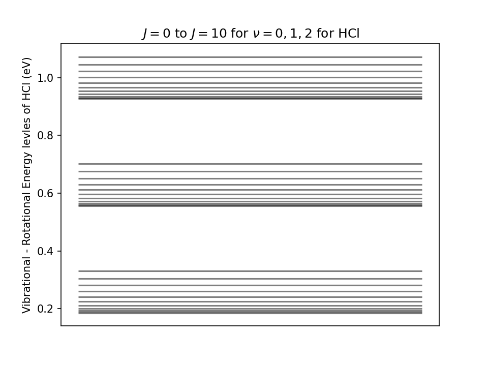
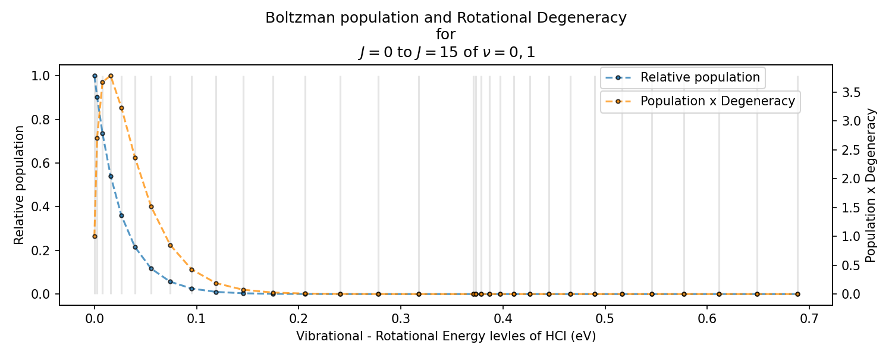
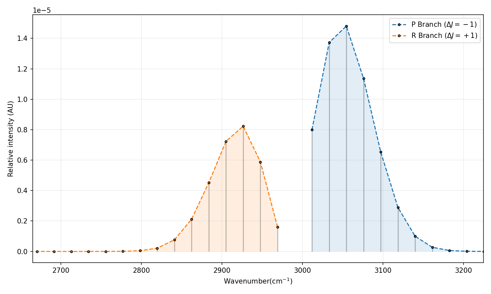
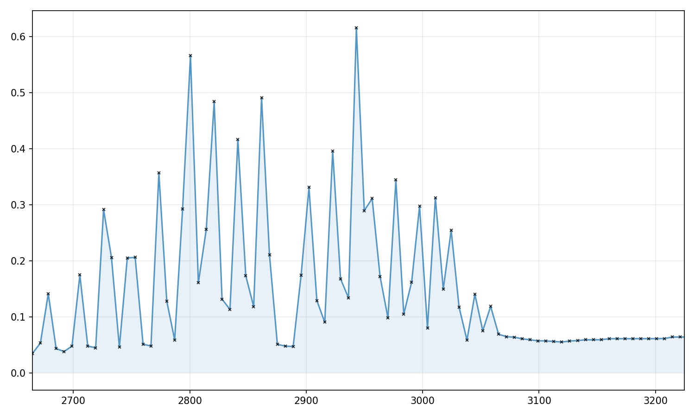

14| Vibrational Rotational Spectrum of HCl
Introduction
Energy levels
We know from our basic chemistry lessons that atoms have energy levels. For example, the hydrogen atom’s ground state (\(n=1\)) has an energy of -13.6 eV, and the next excited state (\(n=2\)) has an energy of -3.4 eV. We also know that electrons can get excited to higher energy levels and spontaneously decay to a lower energy level. In this process, the electron will emit energy corresponding to the difference in energy levels. So, an electron making the transition \(n=2 \rightarrow 1\) will emit a photon of energy 10.2 eV. This corresponds to a wavelength of 121.6 nm. These electronic transitions lead to what we refer to as atomic spectra.
Molecules, too, have electronic energy levels. However, they also have rotational and vibrational energy levels. However, the energy levels corresponding to these types of motions are lower than electronic levels. Hence, the corresponding emissions are related to the infrared and microwave parts of the electromagnetic spectrum.
You can obtain the wavelength corresponding to a photon using the formula \(E = \dfrac{hc}{\lambda}\). \(h\) is Planck’s constant, \(6.626 \times 10^{-34}\) Js and \(c\) is \(2.998\times 10^8\) m/s, the speed of light in vacuum.
Rotational Energy levels
The rotational energy levels of a diatomic molecule (like HCl or CO) is given by:
\[ E_\text{ROT,$J$} = BJ(J+1) \tag{1}\]
\(J = 0, 1, 2,3,\ldots\) is the quantum number associated with the rotational motion. \(B\) is called the Rotational constant and is given by:
\[ B = \dfrac{h^2}{8\pi^2 I} \tag{2}\]
Where \(I\) is the moment of inertia of the molecule about its centre-of-mass given by:
\[ I = \mu r^2_\text{bond length} \tag{3}\]
Where:
\[ \mu = \dfrac{m_1 m_2}{m_1 + m_2} \tag{4}\]
and \(m_1\) and \(m_2\) are the massess of the atoms and \(r_\text{bond length}\) is the bond length.
The rules of quantum mechanics restrict the transitions between rotational energy levels in a molecule, which are specified by selection rules. The selection rule is a consequence of the conservation of angular momentum in the molecule. The selection rule for rotational transitions for a diatomic system is:
\[ \Delta J = \pm 1 \tag{5}\]
This means that the change in the rotational quantum number (\(J\)) between the initial and final states of the transition can only be plus or minus one.
Degeneracy of states
There are multiple ways for a molecule to rotate. This is reflected in quantum mechanics by a concept called degeneracy, meaning that a given energy state can exist in multiple ways. The number of ways is called the degeneracy of the system.
Rotational states have a degeneracy given by:
\[ \text{Rotational degeneracy} = 2J +1 \]{#eq-x)
Intensity of the spectrums
A photon will be emitted whenever there is a transition between two allowed \(J\) values. The more transitions there are, the greater the number of photons emitted. Therefore, the intensity or brightness of the corresponding spectral line depends on how many transitions occur. Two factors determine this number of transitions.
One is how many molecules are in the initial and final energy (\(J\)) states. This is determined by the temperature of the system and is given by the famous Boltzmann distribution:
\[ \dfrac{N_m}{N_n} = e^{-\left(\dfrac{E_m - E_n}{k_b T}\right)} \tag{6}\]
The second is the degeneracy of the states.
Vibrational Energy levels
The vibrational energy levels of a diatomic molecule (like HCl or CO) is given by:
\[ E_\text{VIB,$\nu$} = \left(\nu+\dfrac{1}{2}\right) h\omega_\text{osc \tag{7}\]
\(\nu = 0, 1, 2,3,\ldots\) is the quantum number associated with the rotational motion. \(\omega_\text{osc}\) is the natural angular frequency (radians/second) of the oscillations and is given by:
\[ \omega_\text{osc} = \dfrac{1}{2\pi}\sqrt{\dfrac{k}{\mu}} \tag{8}\]
\(k\) represents the strength of the bond.
The selection rules for vibrational transitions are:
\[ \Delta \nu = \pm 1, \pm 2, \pm 3, \ldots \tag{9}\]
Rotational Vibrational Energy levels
In reality, a molecule both rotates and vibrates. So, the energy levels of a molecule are more accurately described by:
\[ E_\text{VIB-ROT,$J, \nu$} = BJ(J+1) + \left(\nu+\dfrac{1}{2}\right) h\omega_\text{osc} \tag{10}\]
The energy transitions follow both transition rules:
\[\begin{align} \Delta J &= \pm 1 \\ \Delta \nu &= \pm 1, \pm 2, \pm 3, \ldots \end{align}\]
Data for HCl
| Quantity | Value |
|---|---|
| Mass of \(^{1}\)H | \(1.673 \times 10^{−27}\) kg |
| Mass of \(^{35}\)Cl | \(58.06 \times 10^{−27}\) kg |
| Bond length (\(r_\text{bond length}\)) | \(0.127\) nm |
| Bond strength (\(k\)) | \(516\) Nm\(^{-1}\) |
Tasks
Vibrational Rotational Energy levels
Using equation #eq-vibrot-energy, reproduce the following plot for the energy levels corresponding to the rotational states \(J=0\) to \(J=10\) of the vibrational states \(\nu=0,1,2\) for HCl molecule.
Note: The energy is in eV.

Boltzmann population and Rotational Degeneracy
For a given sample of HCl molecules, we can use equation #eq-boltzmann to determine how many molecules will occupy an energy state \(E_{\nu=0,J=0}\) relative to the lowest energy, which is the vibrational-rotational state \(\nu=0,J=0\). Further, remember there is a degeneracy of \((2J+1)\) for the rotational states. So, to find the total number of states available, we can multiply the population and degeneracy. This will give us an idea of the intensity we expect if there is a transition from that vibrational-rotational level.
The following plot shows this information for the \(J=0\) to \(J=15\) of \(\nu=0,1\) of HCl for 300 K. Notice how fast the thermal population of states diminishes. Further, A peak at around \(\nu=0,J=3\) indicates that we should expect more transitions from/to this level.
Your task is to reproduce the following (or a similar) plot.
Notes/Hints:
- The energy now appears on the horizontal axis.
- The vertical lines indicate the same energy levels as the previous plot.
- Remember
twinx()

Vibrational Rotational Spectrum of HCl
If you look at the selection rules, you will notice that both of the following deexcitation transitions are possible:
\[\begin{align} \text{P branch}\qquad&(\nu, J) \rightarrow (\nu-1, J-1) \\ \text{R branch}\qquad&(\nu, J) \rightarrow (\nu-1, J+1) \\ \end{align}\]
Along with degeneracy and population states, use this information to create the vibrational-rotational spectrum for HCl shown below. You need only consider \(\nu=0,1\) and \(J=0\) to \(J=15\) (why?).
Do not worry about the style of the plot; just get the science right.

Just for comparison, here is the real vibrational-rotational spectrum from NIST:
